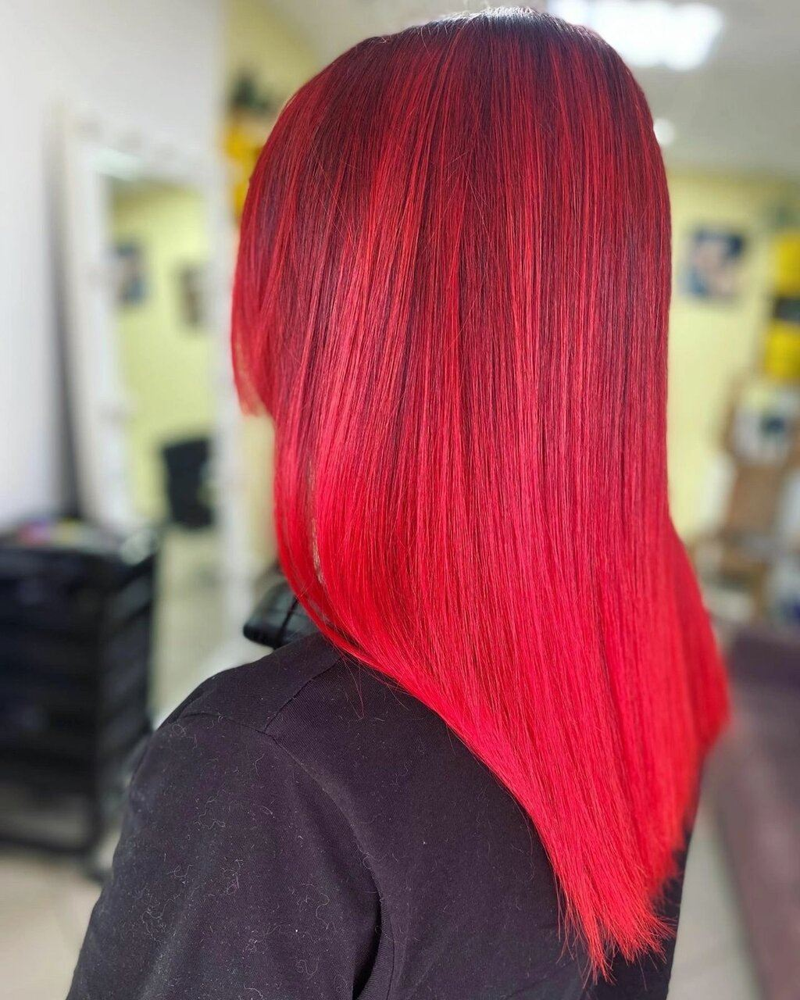
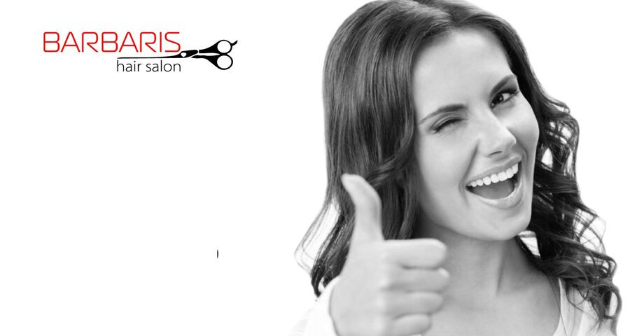
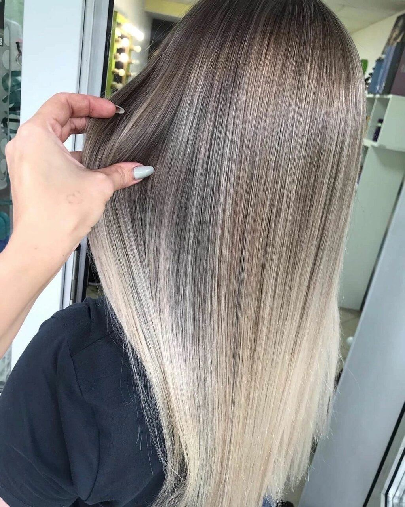
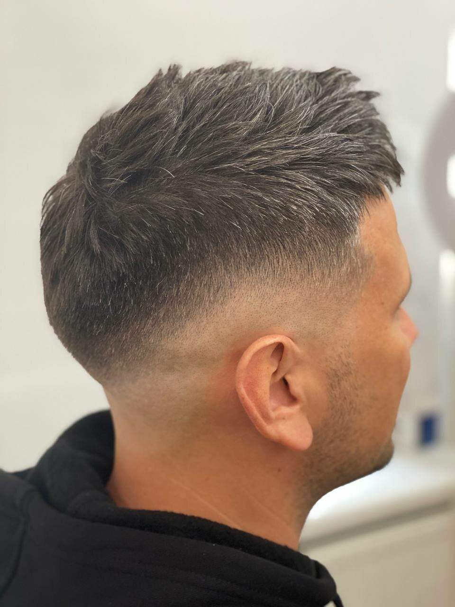
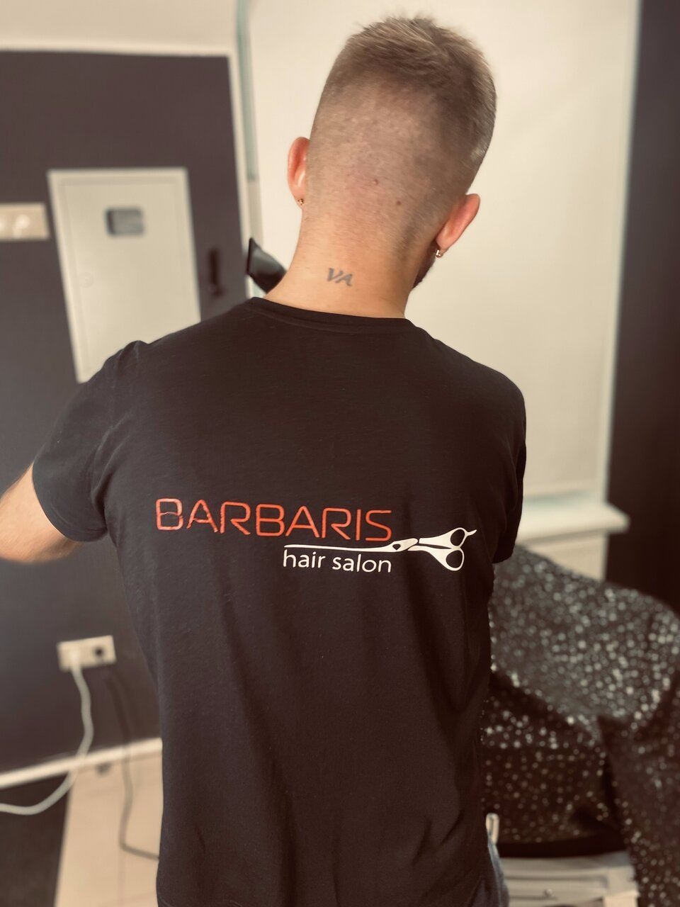
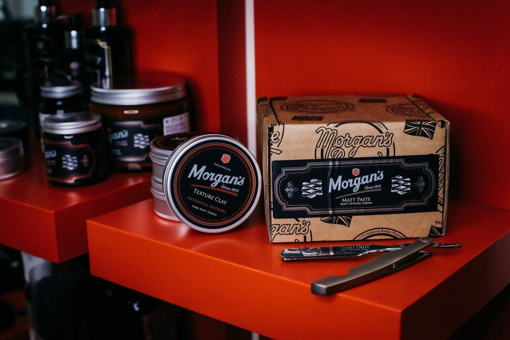

Hair salon · парикмахерская · барбершоп
Мужские и женские стрижки, окрашивание и мужские комплексы — около 240 метров от метро «Площадь Восстания».
+7 (961) 808-80-04

Скидка предоставляется всем новым клиентам на все виды услуг при онлайн-записи. Начисляем cashback. Выбери своего мастера и услугу онлайн.
Записаться онлайнРаботаем каждый день с 10:00 до 21:00. Стрижки для мужчин и женщин, сложное окрашивание, бритьё и оформление бороды, уход. Можно прийти с собакой.
Точную цену уточняйте при записи.
Записался на обычную мужскую стрижку, а получил настоящий сеанс релаксации: мытьё головы с массажем, аккуратное оформление контуров и отличная стрижка.
Мастер понял пожелания с двух предложений, подобрал образ и учёл даже особенности роста волос. Лучший специалист за последние лет пять.
Был на химической завивке: великолепный сервис, мастер расспросила о предпочтениях и подобрала лучший вариант. Вернусь не один раз.




| Понедельник | 10:00–21:00 |
| Вторник | 10:00–21:00 |
| Среда | 10:00–21:00 |
| Четверг | 10:00–21:00 |
| Пятница | 10:00–21:00 |
| Суббота | 10:00–21:00 |
| Воскресенье | 10:00–21:00 |